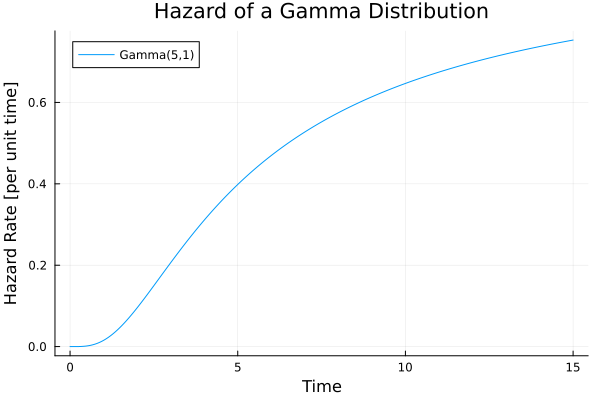
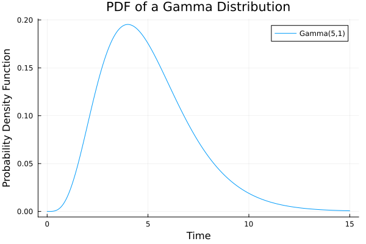
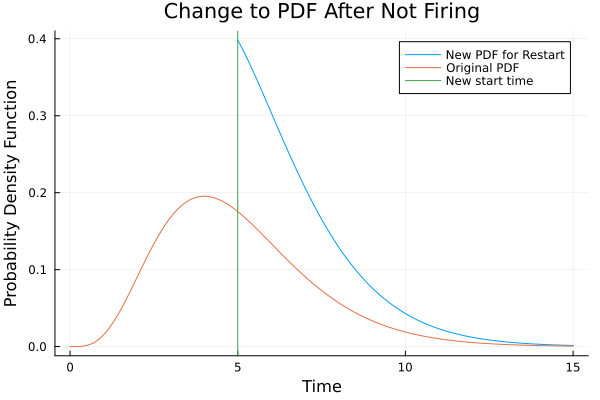
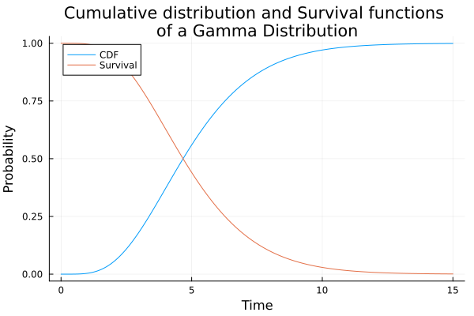
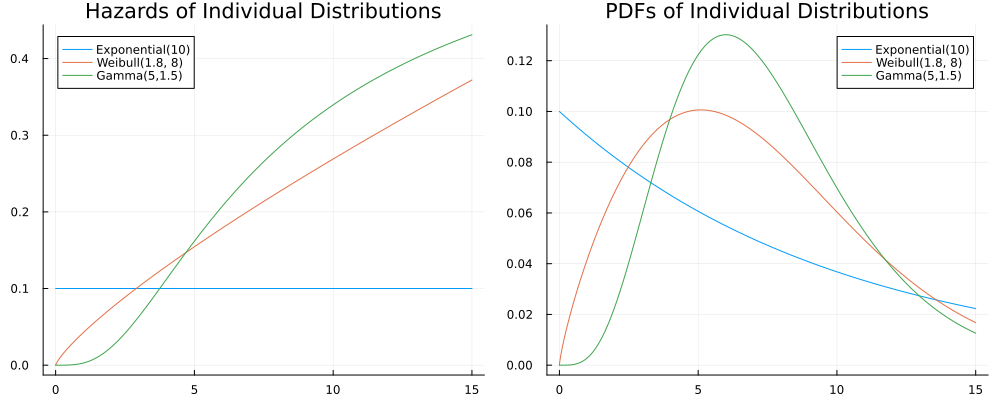
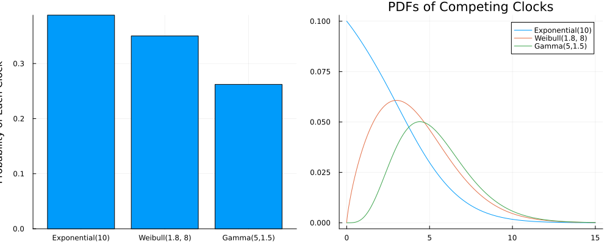
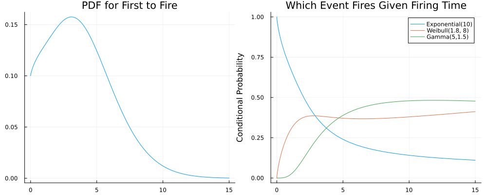

Non-exponential Simulation
Fleck is a sampler for generalized semi-Markov processes (GSMP). Every event in a generalized semi-Markov process is chosen as the result of a competion among clocks to see which fires next.
In a process-oriented simulation (like SimJulia), control flow is based on tasks. Each task performs some action on the state, rolls the dice, and sets a wake-up time. It might wake up as expected and possible execute code, or it might be interrupted by another task's actions. In contrast, an event-oriented simulation using Fleck will create a set of possible next events, assign a probability distribution for when each can happen, and the timing of which happens first determines which next event happens. Let's look at how a probability distribution describes the time for an event to happen and then how they compete in Fleck.
Distributions in Time
Let's say you have a cold. You know you aren't going to recover immediately, but, as days go by, you're more and more sure you'll recover soon. This graph below shows recovery as a hazard rate, which is the probability, per unit time, given that the event has not yet happened.

This hazard rate starts at zero, meaning there's no way you'll recover when you're first sick. It gets more likely over time that you're at the tail end of being sick. The hazard rate shown is that of a Gamma distribution, commonly used to describe the rate of recovery for a population of individuals who are sick.
If, instead, you want to see the number of people who recover on any given day, that is called a probability distribution function (pdf), which is a much more common way to display a distribution in time.

Where the hazard rate is an instantaneous quantity at a point in time, the probability distribution function (pdf) integrates over all possible future times. If we call the hazard rate $\lambda(t)$ and call the pdf $f(t)$, we get this relationship.
\[f(t) = \lambda(t) e^{-\int_0^t \lambda(s)ds}\]
The graph of the pdf tells us that the most likely time for this event is a little before time 5, in whatever units. You will see graphs of pdfs on Wikipedia because this is how people usually think about the probability an event happens at some time.
{kind=link}
A simulation, however, has multiple events possible at any one time. One event may happen, and then other events need to restart. Let's ask, if you still have a cold on day 5, what is the probability distribution function for when you will recover?

The probability distribution function changes now that you know you didn't recover earlier than day 5. On the other hand, the hazard rate for recovery from the cold will be unchanged. Using the same hazard rate, we can recalculate the pdf from the new time $t_0=5$.
\[f(t;t>t_0) = \lambda(t) e^{-\int_{t_0}^t \lambda(s)ds}\]
The hazard rate describes a flow of probability, whereas the distribution function tells us about ensembles of events.
The hazard rate is related to the well known cumulative distribution function (CDF) by an integral. The CDF tells us what is the overall probability the event occured some time in the interval $[t_0,t_1)$.
\[F(t_0;t_1) = 1 - e^{-\int_{t_0}^{t_1} \lambda(s) ds}\]
Equally important for simulation is the survival function (sometimes called the complementary cumulative distribution function), which is the probability the event will not occur until after $t_1$.
\[S(t_1) = 1 - F(t_1;0) = e^{-\int_{0}^{t_1} \lambda(s) ds}\]

For our example, survival is the chance the cold lasts longer than the given time.
Competition
Individual Distributions
Let's think of a moment when there are three possible next events. There is a Gamma distribution for when you recover from a cold, a Weibull distribution for when you decide to take medicine for the cold, and an Exponential distribution for when your Mom calls you. Each one is described by a distribution in time, and we can think of them as three hazard rates.

The separate hazard rates are what we put into the simulation. Given their competition, the hazard rates will remain unchanged, but the pdfs will change.
Marginal Probability
Each of the three clock distributions above corresponds to a unique event $E_i$, which has a probability that it will be the first to fire. We calculate this probability by marginalizing over the other events, which ends up being an integral over the distribution, multiplied by the survivals of the other events.
\[P[E_i] = \int_0^\infty f_i(t) \prod_{j\ne i} S_j(t) dt\]
That gives the chart on the left, where the sum of all $P[E_i]$ is one.

The graph on the right shows the conditional distribution in time for each event, given that it was the one that fired, so it is $P[t_i | E_i]$. In the language of semi-Markov processes, these distributions are called holding times. You can see that these distributions don't match the distributions for the individual events. They are modified by competition.
Marginal Time
What if we split the marginal and conditional the other way? Instead of marginalizing the probability of which event fires, start with a marginal of the probability for when any event fires. One way to calculate this is to say that the hazard rate for any event to fire is the sum of the hazard rates.
\[\lambda_m(t) = \sum_i\lambda_i(t)\]
From here, we know the pdf for the first firing time.
\[f(t) = \lambda_m(t)\exp\left(-\int_0^t\lambda_m(s)ds\right)\]
From the graph above, if we pick a time, $t_1=10$, we can read from the graph three hazard rates, $(\lambda_1(t_1),\lambda_2(t_1), \lambda_3(t_1))$. Each hazard rate is the rate, per unit time, of that event. We know that, if the simulation makes it to $t=10$ without any event happening, the conditional probability for any one of those events is the ratio of hazard rates.
\[P[E_1|t=t_1] = \frac{\lambda_1(t_1)}{\lambda_1(t_1)+\lambda_2(t_1)+\lambda_3(t_1)}\]
Now we can plot, on the left, the pdf for who fires first and, on the right, the probability of which event fires, given the firing time.

On the left of this graph is the pdf for the first event of the three to fire. We can see this as a marginal $P[t]$ and then the right-hand graph as the conditional $P[E_i|t]$.
Specification of a Simulation
If we imagine a drug trial, where patients can recover, die, or exit the trial for some other reason, there are three mutually-exclusive events, like the example above. If we pick the recovery event and plot its distribution in time, which of the above plots will we see? This will be a holding time. It won't be the pdf that represents the rate of recovery in the absence of competing events. However, given observations of competing events, it is possible to calculate back to the original hazard rates using survival analysis.
Survival analysis uses observations of event times and event cancellations to estimate hazard rates for each event. It helps you tease apart the effects of competition to see the underlying probability per unit time that any event would fire, given that it has not yet fired.
Simulation is the opposite of survival analysis. It allows you to take rules for how any event would fire, in the absence of competition, and to place it in a more complicated environment where competition happens. When you specify a continuous-time simulation, it isn't specified with the pdfs of holding times but with the pdfs of rates derived from survival analysis.
This page was generated using Literate.jl.